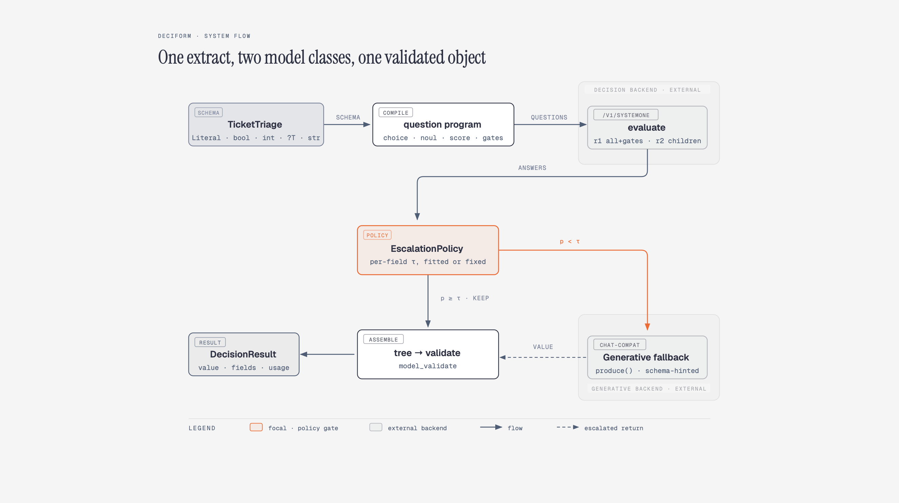
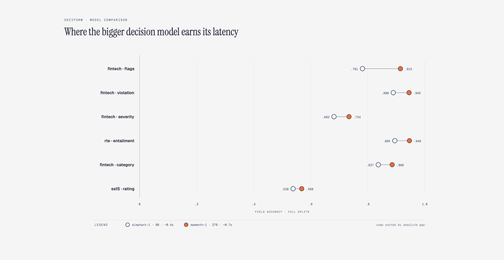
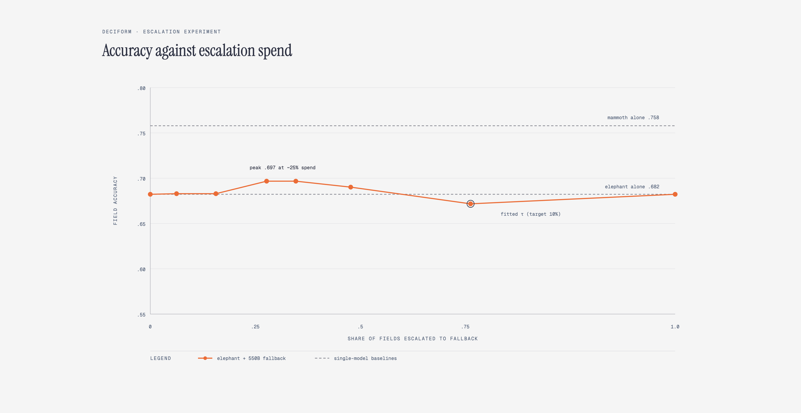

I built DeciForm, a small library that turns a Pydantic schema into a program of typed decision questions, answers them in batched rounds on a System One decision model, and hands only the fields that fail a fitted confidence bar to a generative fallback. On live endpoints the 9B decision model scores .929 on Banking77 across all 77 options, .895 on RTE, and .68 to .95 across a procedurally labeled fintech suite, all with calibrated probabilities per field. The larger 27B model lifts the hard fields by up to 13 points. Escalating the lowest-confidence fields to a 550B generative model adds a further point and a half at about a quarter of fields sent up, a modest gain that says more about the category than the curve.
A decision model does one thing well. You hand it a state and a set of typed questions, and it returns a probability distribution per question. Pick one of these options, yes or no, rate on a scale. The answers are calibrated, they arrive in tens of milliseconds, and the model never generates a token it was not asked about.
Applications do not want answers to questions. They want objects. An expense review has a category, a violation flag, a severity, a set of flags, maybe a reviewer, and a note. A support triage has a team, an urgency, a sentiment, and a draft reply. Each of those fields has its own shape, its own confidence, and its own consequence when the model is wrong.
Between the primitive and the object sits a layer nobody ships. Someone has to walk the schema and decide which question type each field becomes. Someone has to batch the questions so a round trip is not wasted. Someone has to handle the optional branch, where asking the child's question is itself a decision. Someone has to turn a probability into a policy, decide which fields can be trusted and which need a second opinion from a bigger model. And someone has to record all of it, because a decision you cannot explain is not a decision you can deploy.
The second problem is the one most pipelines already feel. Teams reach for a large language model for these fields because that is what they have. A chat model answering thirty independent typed questions costs thirty calls, returns uncalibrated text, and has to be parsed back into the structure it just destroyed. Decision models exist precisely to remove that waste, but the ecosystem around them currently offers the wire protocol and nothing above it.
DeciForm is the missing layer. jsonformer made the same argument in 2023 about structure (GitHub repo). Do not trust the model with the skeleton. Fill the
skeleton in code and let the model do only what it must.
You write the schema. Everything else is the library's job.
class TicketTriage(BaseModel):
category: Literal["billing", "bug", "account", "feature_request", "other"]
is_urgent: bool
sentiment: Literal["angry", "neutral", "positive"]
priority: int = Field(ge=1, le=5)
needs_human: Literal["none", "support", "engineering"] | None = None
reply_draft: str = ""
sf = Deciform(
backend=SystemOneBackend(model=SystemOneBackend.ELEPHANT),
fallback=OpenAIGenerativeBackend(base_url=..., model=..., api_key=...),
escalation=EscalationPolicy(threshold=0.8, debias_k=3),
)
result = sf.extract(TicketTriage, state=ticket_json)
The walk over this schema produces six questions. Literal fields become
choice, bool becomes noul, a bounded int becomes
score, a list[Literal] becomes one noul per member, and
Optional[T] gets a presence noul that gates its children. The
reply_draft string asks nothing at all, since no decision primitive produces free text. Round one
asks every independent question plus the needs_human presence gate in a single batched call. If
the gate fires, round two asks which kind of human. Then each field's top probability is checked against the
policy threshold, the weak ones plus the draft go to the fallback, and the whole thing is assembled and
validated.
The object is only half of what comes back. Each field carries a receipt as well.
== field traces ==
category elephant top=0.91 kept
is_urgent elephant top=0.94 kept
sentiment elephant top=0.96 kept
priority generative top=0.60 escalated
needs_human generative top=0.62 escalated
reply_draft generative generativeThe traces are the product as much as the object is. Which backend answered, at what confidence, which fields were skipped because a gate stayed closed, which were escalated, and how many tokens the whole extract consumed.
A short use case, stated plainly. A pipeline triages fifty thousand records a day against a fixed policy. An
LLM per record is a budget and a latency problem. A decision model plus handwritten glue is an engineering
problem that gets quietly rewritten, and quietly broken, per schema. With the layer in place it is
sf.extract(Model, record), around half a second, one batched call, calibrated confidence per
field, and an audit trail a compliance review can read.
Three backends were compared live across four task suites. elephant-1 and mammoth-1 are hosted decision models at 9B and 27B. The third backend is a chat model treated as a decision model by reading first-token logprobs over option letters, the trick from the recent work on LLMs as decision models. The suites are real benchmarks plus a procedurally labeled fintech suite where the gold answers are deterministic.
| task · field | elephant-1 (9B) | mammoth-1 (27B) |
|---|---|---|
| banking77 · intent (77 options) | .929 · ece .013 · flip .024 | .937 · ece .010 · flip .020 |
| rte · entailment | .895 | .946 |
| sst5 · rating (5-way) | .538 | .568 |
| fintech · category | .837 · flip .095 | .886 · flip .053 |
| fintech · violation | .890 | .945 |
| fintech · severity | .682 | .734 |
| fintech · flags | .781 | .915 |
| fintech · reviewer (Optional) | .356* | .327 |
*The fintech reviewer row reflects the post-fix presence gate; the other rows predate the rephrase.
The LLM readout backend reached .82 on RTE before rate limits cut the run short, which puts a generic chat model within striking distance of the 9B specialist on a single-question task. It does not scale, since it pays one call per question where a decision model pays one per round, but it makes the library's “any LLM is a decision backend” path real rather than aspirational.

Three findings are worth more than the table.
The option-order robustness is real. Prior work reported flip rates near thirty percent on
some open decision models, meaning the model changes its answer when the option order rotates. Measured on
these backends the rate is two to nine percent, and the optional debias_k rotation-averaging in
the library is a safety margin rather than a necessity.
The evaluation caught a bug in my own code. Score answers arrive as a level index from zero to k minus one, not in the schema's value space. The assembly layer was clamping the index directly, so SST-5 initially scored near random. Fixing the mapping doubled accuracy, and adding per-level semantic labels on top of that gained only two more points. The harness earning its keep on the very tool it was built to measure is the best argument for building it.
Calibrated abstention is honest, not magic. EscalationPolicy.fit takes a labeled
calibration slice and a target error rate and produces per-field thresholds. On fintech it placed
policy_violation at τ=0.66 and category near τ=1.0, which is the fitting
procedure saying, correctly, that elephant cannot promise ten percent error on category at any threshold. The
fitted policy refusing a promise it cannot keep is exactly what it is for.
The claim this architecture lives or dies on is that a cheap decision model handles the confident bulk and a strong generative model covers the tail. So it was measured, not assumed. One hundred twenty held-out fintech records. elephant answers every field. A generative fallback produces every field once. The curve is then computed offline for every threshold τ, where a field goes to whichever side its confidence dictates.
The first run, with a 30B chat model as the fallback, inverted. Escalation made things worse, monotonically, and full escalation scored 0.29 against elephant's 0.68. Part of that was rate-limit attrition in the fallback calls. The larger part was real. A generalist thirty-billion-parameter model is simply worse at typed decisions than a purpose-built nine-billion one, so moving probability mass onto it destroys accuracy.
The second run, with a 550B model, is the honest picture.

The read is threefold. Escalation works, modestly, at plus 1.5 points for a quarter of the fields sent up. The fallback has to earn its tail, because the 550B giant only ties elephant when it does everything, which is the strongest possible argument for the decision-model category itself. And mammoth alone at 0.758 remains the best single answer, which is the honest ceiling a two-model setup should be compared against. The fitted operating point at 61 percent escalation scored 0.672, which is what happens when the policy is told to promise something the underlying model cannot deliver.
The limitations are measured, not hedged.
Optional presence gates remain the weakest field. The original gate asked “Does the state specify a value for X?”, a literal-presence question that under-fires whenever a record needs a value it does not yet contain. Rephrasing it as an applicability question (“Should 'reviewer' be assigned a value for this record?”) lifted reviewer accuracy from .331 to .356, with gate precision .79 and recall .83. Lowering the gate threshold to 0.3 pushed recall to .89 but cut accuracy to .314, because over-firing forces the model to invent a reviewer where none is needed. The residual error now sits mostly in the child choice itself, not the gate.
Generative fallbacks have a reliability tax. Under sustained rate limiting the fallback failed sixteen percent of calls in the first experiment. Those count as wrong answers, which is fair, but it means the architecture's benefit is bounded by the weakest call in the chain.
Chat-model readout is slow by construction. One call per question against a rate-limited endpoint makes a three-thousand-row benchmark an all-day job. It is a valid backend, not a fast one.
The fintech suite is synthetic. Its labels are deterministic and defensible, but
severity and reviewer encode an internal convention a model cannot fully infer,
which inflates the apparent difficulty of those fields relative to a human-labeled suite.
Score criteria are only as semantic as you write them. Numeric levels carry no meaning for a
decision model. The level_labels mechanism exists because a bare “1 to 5” asks the
model to guess what a five means.
The name and the thesis both honor jsonformer by Rahul Sengottuvelu. The structure is yours. Let the model do only what it must.
If you work on decision models, structured extraction, or calibrated abstention, and see something interesting or that contradicts these numbers, I would genuinely like to hear about it. And if you have the compute, resources, an open position, or a project you want to collaborate on, I am open to both work and collaboration. Please do not hesitate to reach out at taneemishere@gmail.com.